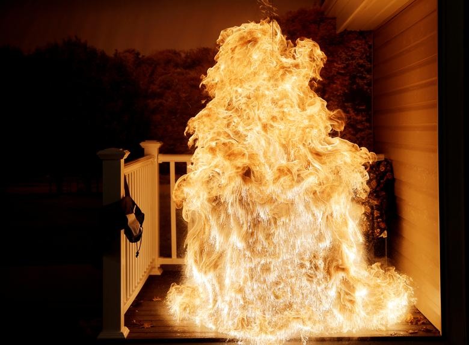

How to Cook a Spicey Turkey Method #1 :)
Hello gamers, it is that time of the year
That is correct, the time to consume the flesh of the funny country bird has come upon us.
This year, you will learn how to cook turkey in the most Spicey way
To ensure you get the extra chivos this year,
make sure to have the following ingredients:
INGREDIENTS
- Working Hands
- Big Gamer Brain
- Very Cool Shotgun
- Know the location of some turkeys
- Ammo
- Satanic Bible
- Metal horns he'll yeah brother 666!!!
- SPICE
- BE HANGRY
Now how to prepare it:
- Remeber from ingredients that I asked you to Know
the location of some turkeys? Head there. If you get lost
Feel free to use turkeymaps.com
- Get your shotgun ready, gamer
- Pick the thiccest one and well 360 NO SCOPE the bad boi
- Take their birthdate suit off, and let the inner flesh cool for a while.
BIG GAMER TIP: Give them a beer to cool even more
- While the turkey is cooling, lets go gather the last ingredient.
Go to your nearest space sport, and travel to ARRAKIS
and get some of that Spice. This is whay will provide with the best
spicey aroma and taste for our turkey. We are gaming hard.
- Before adding the spice, get the satanic bible; light up the room with the funny candles;
and using the leftover blood inscribe the floor to contact Santa :)
- For the last step, place the turkey in the middle of the pentagram,
Put the spice on top of it, start invoking satan and whilst doing so;
do the naenae and start dabbing very hard
They turkey should start to ignite and explode. If your house is not on fire
and a Demonic Bird Entity isn't in your vicinity, then you
have failed as a gamer! Enjoy :D
